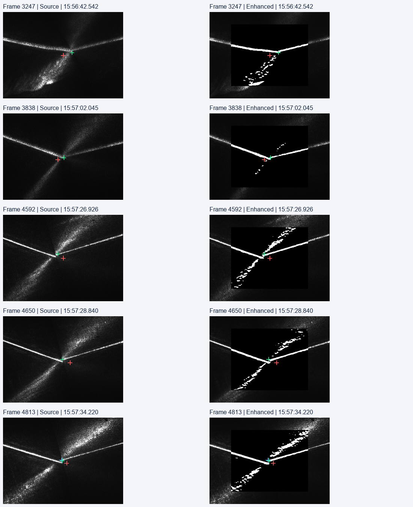

只读分析 · 原始点保留 · 时间 Asia/Shanghai · 运行已正常完成绿色十字跳动：三种机制已有证据
会话：20261020_155636_981_增加有过程记录的测试
从融合前二维点追到三维投影、ICP 批次和跟随输出；不将示教参考当作焊缝真值。
2,124完整有效诊断帧
15.04 px在线相邻帧最大纵向跳变
3.781 mm对应最大固定基座 |ΔZ|
30 对PNG 全部校验通过 · 23.88 MiB
结论与处理顺序
- 纵向大跳主要先出现在融合前 KCF 点。在线阶段 1,748 个相邻帧对中，15 对 |Δv| > 5 px；其中 14 对不是模板重建帧。帧 9034 的仿真 v 不动，KCF v 已跳 +15.46 px，最终 +15.04 px（同帧 Δu = +25.22 px），三维 ΔZ = −3.781 mm。应优先回放真实图像 → Gabor/Otsu → 相关响应，而非先平滑三维。
- 横向存在可直接复核的融合权重拉动。帧 9550 的 KCF u 只变 −0.64 px、仿真 u 变 −1 px；权重从 0.9759 降至 0.7917，最终 u 反向跳 +15.61 px。当前两点相距约 88 px，使权重突变产生约 +16.26 px 的独立记账项。124 个 |Δu| > 5 px 事件中，16 个权重变化项大于跟踪变化项。
- 模板重建与横向跳动明显伴随。在线相邻帧中 34 次重建有 17 次 |Δu| > 5 px（50%）；其他帧为 107/1714（6.24%）。本轮重建间隔严格为 51 个处理帧。重建时模型重训、滤波重新初始化都发生，单靠标记不能再拆分两者贡献。
上述 5 px 是本分析筛选事件的阈值，不是产品精度或判废标准。相邻帧变化包含真实运动；未把它们全部命名为检测噪声。
全程观察
只显示在线阶段内部的相邻差分。15:57:27 前后由初始扫描进入在线跟随的约 190 px 位置变化已排除，不计入抖动。
逐事件追踪
切换事件或输入帧号，图表显示该帧附近的原始记录。竖线标出选中帧；虚线标出窗口内的重建帧。
关键帧证据表
| 帧 / 相机时间 | Δu KCF / 最终 px | Δv KCF / 最终 px | ΔZ mm | 像素 / 位姿项 mm | 重建 |
|---|
9034
15:59:53.512 | +25.21 / +25.22 | +15.46 / +15.04 | -3.781 | -3.782 / +0.001 | 0 |
9550
16:00:10.539 | -0.64 / +15.61 | +0.26 / -2.30 | -0.092 | -0.086 / -0.006 | 0 |
4961
15:57:39.103 | -9.80 / -11.02 | -0.72 / -2.43 | +0.898 | +0.857 / +0.041 | 1 |
5939
15:58:11.377 | +5.10 / -0.26 | -2.46 / -5.33 | +0.960 | +0.972 / -0.012 | 1 |
10878
16:00:54.363 | -3.70 / -7.32 | +11.10 / +12.97 | -2.214 | -2.313 / +0.099 | 0 |
5950
15:58:11.740 | +9.11 / +1.80 | +0.50 / -4.36 | +0.691 | +0.715 / -0.023 | 0 |
“像素项”先固定上一帧位姿、改变当前 u/v，再将位姿更新到本帧；两项之和复现实际 ΔZ。像素项包含 u/v 同时变化；以帧 9034 为例，先改 u 再改 v 的分项约为 −0.851 / −2.931 mm，位姿项 +0.001 mm。它是有顺序的数值拆账，不是物理干预实验。当前本机标定对全部 2,124 点的三维复算最大差为 8.52×10⁻⁷ mm。
传到下游之后发生了什么
共 319 个 ICP 批次，307 个应用、12 个回退原始点。帧 9034 可按坐标精确关联到第 193 批，该批 RMS 约 2.357 mm，最终回退原始点；这说明 ICP 没有保证滤除异常。所有 raw_pending 均通过本轮记录的坐标逐项匹配回源帧，见 CSV。
另有应用批次对原始批折线的最大改动达到 1.685 mm。该距离仅比较“释放目标”与“同批原始点折线”，不表示真实焊缝误差。首目标点可能是在传感器前视位置，不能把它与 TCP 的欧氏距离直接作为跟踪误差。
跟随计算记录的单次 |dx/dy/dz| 上限分别为 7/6/4 μm；这与检测点毫米级跳变是不同量。不能从检测 ΔZ 推断机器人 TCP 同幅跳动，也不能用正常完成证明轨迹精度达标。
同一材料坐标中的原始轨迹
统一到变位机末节系，单位 mm。检测点使用记录中的 positioner_tcp 加已知 TCP 偏置 (0,0,231 mm)；TCP 使用每条状态自己的外轴角转换。参考是本轮日志内的起始校正路径和本机原始示教文件，未用检测结果事后拟合整圈。可点击图例独立切换曲线。
Z 显示倍率 1×，坐标值不变
图像证据与覆盖缺口
红色：仿真先验；蓝色：融合前 KCF；绿色：最终点。只对原图与增强图做裁剪显示和记录点叠加，未重新检测或修饰条纹。

30 对图中，25 对用于初始扫描，在线阶段只有 5 对，最晚到 15:57:34.220。主要异常发生在 15:58:12、15:59:53 和 16:00:54 附近，均没有同期图像。因此目前能区分跟踪、融合、重建，不能最终区分“源图细节变化、Gabor/Otsu 变化或相关峰误选”。采样图能看到反射纹理被二值化为竞争性亮结构，但不能用前段图像证明晚段根因。
接下来怎样验证
- 先处理可重现的融合权重不连续：用本轮 KCF/先验输入做离线对照，比较连续权重与现策略的事件幅度及偏差，不直接上真实控制。
- 单独对照模板重建：固定同一输入，比较完整重置与保留滤波状态；不要同时更换预处理和融合，避免无法归因。
- 图像采样改为覆盖在线阶段，并对二维大跳/权重跨阈值/模板重建保留前后短窗口。数值仍逐帧，图像总预算继续受限；本分析未修改采样功能或任何生产代码。
- 在取得晚段图像后再评估相关峰质量门控、Gabor 区域和候选焊缝约束；只在三维末端加平滑不能修复已经发生的二维误选。
时间方面，相机时间减状态接收时间范围 −176～169 ms；Vision 开始相对相机的中位延迟 101 ms，95 分位 185 ms；结果写入相对 Vision 结束的 95 分位延迟 281 ms。这些是主机时间指标，不能作为硬件同步精度。最大异常帧的固定姿态拆账已显示位姿项极小，但时序与控制积压仍值得单独验证。